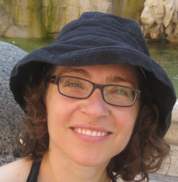
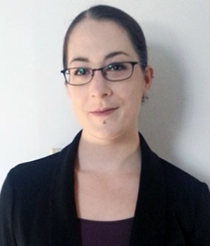

SIMSSA at Dalhousie!
Posted by ehopkins on February 29, 2016
Hello everyone! Things have been a little quiet on the blog, but there’s lots of interesting things coming up soon. First among these is a post about SIMSSA-related work going on at Dalhousie. I work at McGill, and most of the guest posts so far have been from McGill developers and post-docs, but people work on SIMSSA all over the place. Many thanks to Jennifer Bain, one of our Co-Investigators, who is at Dalhousie and helped connect me to some of their researchers. I interviewed a few of them over email so you can all get to know them and their work at Dalhousie a little better.
First up is Barbara Swanson. Currently a postdoctoral fellow at York University, she was a postdoc at Dalhousie in 2014-15 and continues to work on the SIMSSA project with current Dalhousie students. Originally from Regina, SK, Barbara has lived in Halifax, Hamilton, and Cleveland, where she did her doctorate.

Emily Hopkins: What is your involvement with the SIMSSA Project?
Barbara Swanson: I have been involved since September 2014. I have worked primarily with Volpiano transcription – the ground truth data – of the core Cantus Ultimus manuscripts. I have created standardized protocols for transcription and have supervised multiple students at Dalhousie and elsewhere, training them and editing their work.
EH: What major project are you working on right now?
BS: My current postdoc project is on the rise of the virtuosa in late-sixteenth century Italy and the depiction of female virtuosity in Renaissance painting. The guiding question: what does virtuosity look like in Italian Renaissance painting?
EH: What is your musical background?
BS: I studied piano during my bachelor’s degree and studied voice and early music performance practices during my doctorate. I performed much medieval and renaissance music in collegiums and studied voice with early music soprano Ellen Hargis.
EH: What is one piece of music you’ve been listening to or studying a lot recently?
BS: I’ve been listening to a lot of Luzzaschi. Here’s “Aura soave”:
Next, I heard from Zack Harrison. Currently enrolled in his first year of an MA in Musicology, he did his undergradutate degree in Tuba Performance at the University of Windsor.
EH: What is your involvement with the SIMSSA Project?
Zack Harrison: I have been involved in the SIMSSA project since September, as I was offered a Research Assistantship with Dr. Jennifer Bain as a part of my Dalhousie acceptance. I am currently working on inputting notation from the Klosterneuberg 1018 manuscript into the Cantus Database.
EH: What is your thesis about?
ZH: I am writing my thesis about protest music, more specifically African American musicians who wrote protest music for the Civil Rights movement and in opposition to America’s involvement in the Vietnam War.
EH: What is your musical background?
ZH: My musical background is pretty simple: I have played tuba since age 12, and I played in a number of ensembles in the Windsor Ontario area growing up. Most notably, I was the featured soloist for the University of Windsor Wind Ensemble in the third year of my undergraduate degree.
EH: What is one piece of music you’ve been listening to or studying a lot recently?
ZH: “Ohio/Machine Gun” by The Isley Brothers. This song is a medley done by The Isley Brothers of Jimi Hendrix’s song “Machine Gun” and Crosby, Stills, Nash, and Young’s song “Ohio” and it was created to implicitly offer tribute to Black students killed in the lesser known protests at Jackson State, the Jackson State shootings, in 1970, and South Carolina State, the Orangeburg Massacre, in 1968.
The final interview is with Clare Neil. Clare is in the second year of her Musicology MA; she is graduating in the spring and has plans to pursue a PhD. Originally from Brandon, MB, Clare did her Bachelor’s in Toronto at York University.

EH: What is your involvement with the SIMSSA Project?
Clare Neil: I began transcribing manuscripts using the volpiano font in the spring before my program began (May 2014). I have transcribed one of the large Hildegard of Bingen manuscripts, as well as others (F-Pn lat. 12044,), and have been editing as well (CDN-Hsmu M2149.L4, F-Pn lat. 15181).
EH: What is your thesis about?
CN: My thesis is in popular music. I’ve been looking at the interaction of the heavy metal band System of a Down with counterculture around the turn of the millennium in North America.
EH: What is your musical background?
CN: I studied voice (opera and folk) in my undergrad and have participated in numerous choirs over the years. I conducted a community choir in Picton, Ontario for the 2010 Olympic Torch Relay Concert there. I spent three years teaching private voice lessons to students of all ages (primarily 10-18) in Winnipeg before entering the Dalhousie MA program.
EH: What is one piece of music you’ve been listening to or studying a lot recently?
CN: The music video “Boom!” by System of a Down and director Michael Moore has been the focus of my final thesis chapter. My conference paper on the Boom video is available here.
Thank you to the SIMSSA folks at Dalhousie for answering my questions!